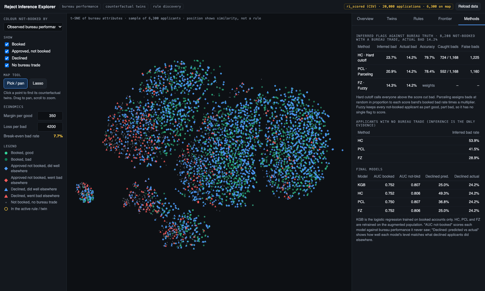
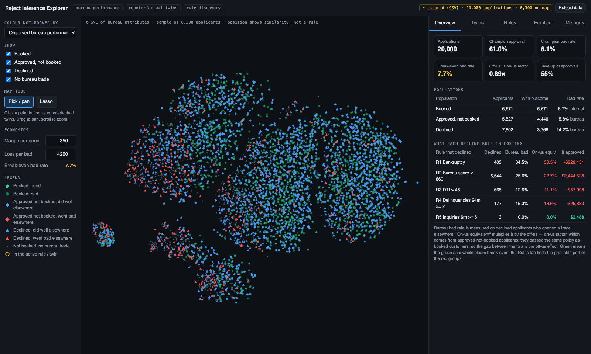
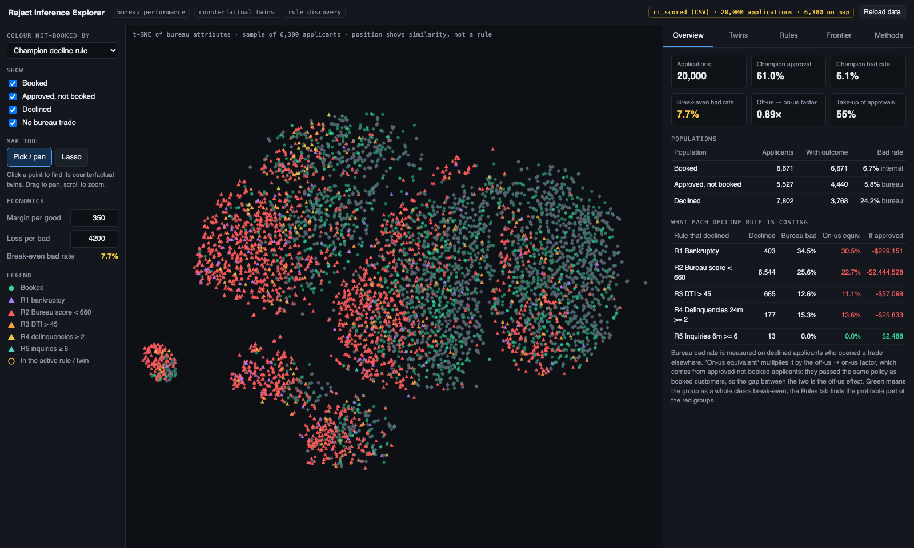
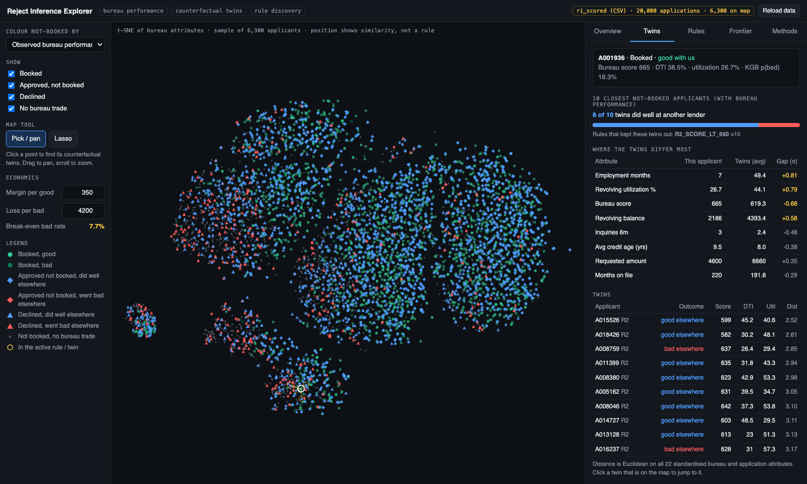
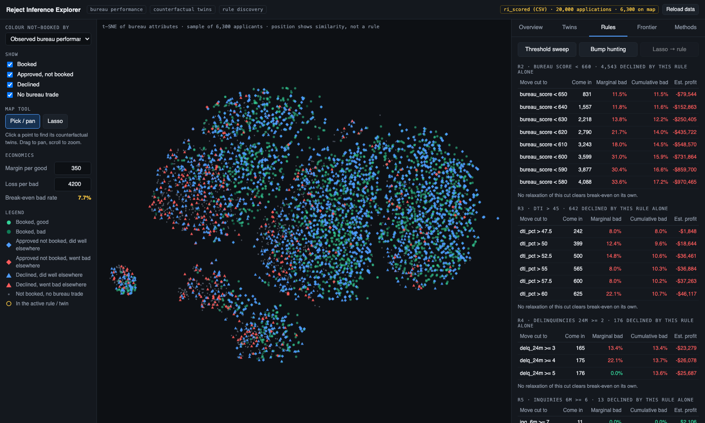
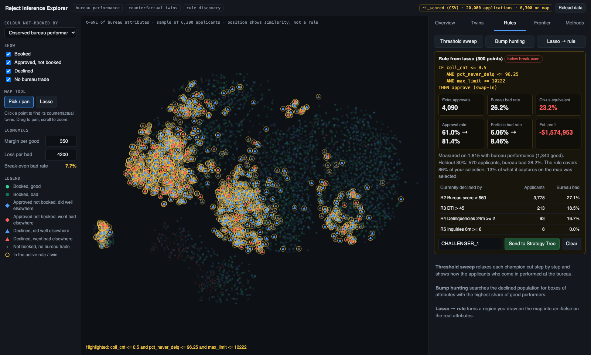
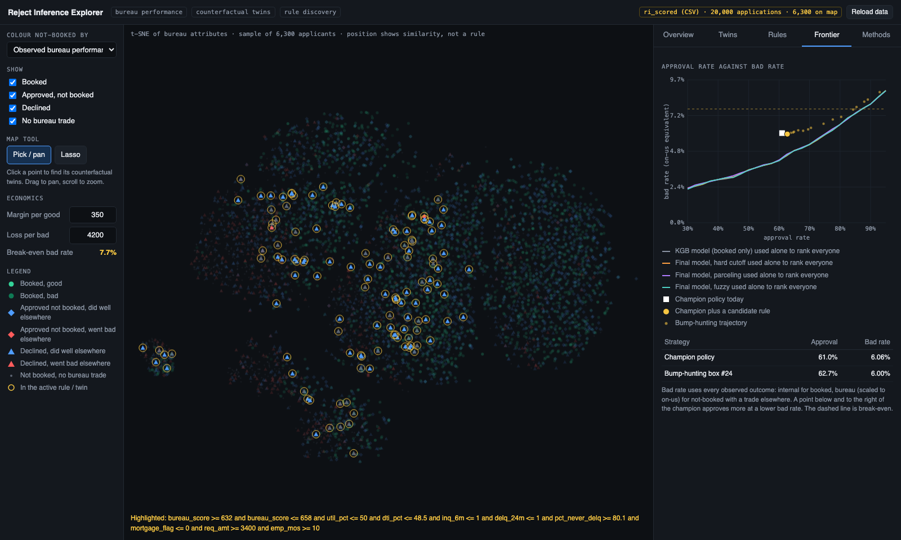

38 slides: the problem, the mathematics step by step, and the app.Download as PDF
REJECT INFERENCE WITH CREDIT BUREAU DATA
Finding the good customers we declined
How bureau performance turns reject inference from an assumption into a measurement. The concepts, the mathematics and a live demo that runs in your browser.
Luiz Kauffmann · Open-source project · Synthetic data
Open with the question, not the product: every lender declines some people who would have been good customers. The question is how many, who they are, and what rule would let them in safely. Everything shown today runs on synthetic data shaped like bureau data, so the figures illustrate the method. They are not findings about any real portfolio.
THE PROBLEM
We only see how booked accounts perform
20,000
applications come through the door
61%
are approved by the current policy
33%
are booked and get a repayment outcome
A scorecard is trained on that 33%, then applied to 100% of applicants. The other 67% never receive a label, and the declined never get a chance to prove the policy wrong.
Synthetic data. Figures illustrate the method.
This is the selection problem. We learn only from the people we chose to lend to. If the policy is wrong about a group, we never find out, because that group never gets an account. In the sample: 20,000 applications, 12,198 approved, 6,671 booked.
THE PROBLEM
Two questions follow
1. Modelling
How do we build a score for everyone who applies, when the bad flag exists only for booked accounts?
Classical reject inference
2. Strategy
Which applicants did the policy turn away who would have been good customers, and what rule lets them in without raising the bad rate?
Swap-in analysis
Bureau data connects the two. For a not-booked applicant who opened a similar trade with another lender, we can see how that trade performed. The second question stops being a guess and becomes a measurement.
Synthetic data. Figures illustrate the method.
Most reject-inference work stops at question one. The interesting business question is the second: who did we wrongly decline, and what do we change. Bureau performance on trades opened elsewhere is what makes that answerable.
THE EVIDENCE
Three populations, three kinds of evidence
| Population | Count | What we observe | Bad rate |
|---|---|---|---|
| Booked | 6,671 | Internal 12-month outcome | 6.7% |
| Approved, not booked | 5,527 | Bureau outcome for 4,440 | 5.8% |
| Declined | 7,802 | Bureau outcome for 3,768 | 24.2% |
The bureau outcome is never used to train a model. It is held back as an independent check on everything that follows.
About 4,000 declined applicants have no bureau trade at all. For them, inference remains the only evidence.
Synthetic data. Figures illustrate the method.
Three groups. Booked: we know what happened with us. Approved but not booked: they took an offer elsewhere, and the bureau shows how it went. Declined: about half found credit elsewhere, and the bureau shows that too. Note the declined bad rate of 24 percent overall. The policy is broadly right. The question is where it is wrong.
BEHIND THE SCENES
The mathematics, step by step
1. Score the booked
2. Infer the rejects
3. Translate off-us to on-us
4. Price the decision
5. Map and twins
6. Search for rules
Six steps. The first two are classical reject inference. Steps three and four turn a bureau outcome into a profit-and-loss statement for our own book. Step five explains the picture and the twins. Step six is where new rules come from. Nothing is a black box: each step is a formula or a short algorithm, and we will walk through each one.
STEP 1 · SCORE
A model on the outcomes we know
The known good/bad (KGB) model is a logistic regression trained on booked accounts only. Its target is the internal 12-month bad flag.
z = β0 + β1·x1 + … + βk·xk
p_kgb = 1 / (1 + exp(−z))
x = bureau and application attributes. p_kgb = probability of going bad.
- Trained without class weighting, so the output stays a calibrated probability, not only a ranking.
- It then scores everyone who was not booked.
- Its blind spot: it has never seen a declined applicant. Below the policy cuts it is extrapolating.
Synthetic data. Figures illustrate the method.
Step one is the model everyone already has: fit on booked accounts. We keep it calibrated because the next step uses its output as a probability, not just a rank order. The weakness is the extrapolation: the model is asked about people unlike anyone it trained on.
STEP 1 · SCORE
Why a booked-only model is not enough
Applicants ordered from lowest to highest risk →
- Truncation. Booked accounts below the policy cuts barely exist (only manual overrides), so the model never learns how risk behaves there.
- Selection. Among the approved, who accepts the offer is not random: take-up is 55%, and riskier applicants accept more often.
- Consequence. The score still ranks rejects reasonably, but the level of risk it assigns to them is unverified. Reject inference is the attempt to fix that level.
Synthetic data. Figures illustrate the method.
This is the reason reject inference exists. A model fit only where we lend is asked about people unlike anyone it trained on. Two distortions: truncation, because the declined region has almost no training data, and selection, because even within approvals the people who book are not a random draw. The ranking survives better than the level, and the level is what sets cutoffs.
STEP 2 · INFER
Three ways to label the rejects
Hard cutoff
bad if p_kgb ≥ 0.20
good otherwise
Simple and transparent. Treats a probability as a certainty.
Parceling
P(bad) =
min(1, 1.5 × r_band)
r_band is the booked bad rate in the applicant’s score band. The 1.5 assumes rejects are worse than booked at the same score.
Fuzzy augmentation
bad row, weight p_kgb
good row, weight 1 − p_kgb
No hard label. Each reject enters the training table twice, weighted.
For each method, a final logistic regression is then trained on the whole through-the-door population.
Synthetic data. Figures illustrate the method.
These are the three textbook methods. Hard cutoff draws a line. Parceling draws labels at random at the band's bad rate, inflated by a factor someone has to choose. Fuzzy augmentation avoids choosing a label at all. Each has an assumption baked in: the cutoff, the multiplier, or trust in the KGB probability. Traditionally nobody can check those assumptions. Next slide: with bureau data, we can.
STEP 2 · INFER
Parceling, worked through
- Cut the booked-only score into nine bands. Upper edges: 2%, 4%, 6%, 9%, 13%, 20%, 30%, 45%.
- In each band, measure the bad rate of booked accounts, r_band. If a band has fewer than 30 booked accounts, the applicant’s own score is used instead.
- For each reject, draw a random number u between 0 and 1. Label the reject bad when u < min(1, 1.5 × r_band).
Example, illustrative numbers
Reject with p_kgb = 0.11 → band 5 (9% to 13%).
Booked bad rate in band 5: 10%.
P(bad) = 1.5 × 10% = 15%.
Draw u = 0.62. Since 0.62 ≥ 0.15, the label is good.
The labels are random: rebuild the flow and individual labels change, while the band-level bad rates stay the same. The multiplier 1.5 is an assumption someone has to choose.
Synthetic data. Figures illustrate the method.
Parceling in three lines. Band the score, read the booked bad rate in each band, then assign bads to rejects at that rate inflated by a factor. The factor encodes the belief that a reject is worse than a booked account with the same score. Nobody can verify 1.5 without outside data. That is the role bureau outcomes play two slides from now.
STEP 2 · INFER
Fuzzy augmentation, worked through
No label is chosen. Each reject enters the training table twice, and the final model maximises a weighted likelihood.
L(β) = Σ w_i · [ y_i · log(p_i) + (1 − y_i) · log(1 − p_i) ]
| Training row | Target y | Weight w |
|---|---|---|
| Reject A (p_kgb = 0.30), as bad | 1 | 0.30 |
| Reject A (p_kgb = 0.30), as good | 0 | 0.70 |
| Booked B, went bad | 1 | 1.00 |
No cutoff and no multiplier. Its one assumption: the booked-only score is right, on average, for rejects.
Synthetic data. Figures illustrate the method.
Fuzzy augmentation keeps the uncertainty. A reject with a 30 percent score is 30 percent of a bad and 70 percent of a good. Booked accounts keep their real outcome at full weight. The formula is the ordinary logistic log-likelihood with a weight on each row. It has one assumption, that the KGB probability is right on average for rejects, and that is a testable statement once we have bureau outcomes.
STEP 2 · INFER
Bureau outcomes grade each method
| Method | Labelled bad, not-booked with a bureau trade | Predicted bad rate, declined | Verdict |
|---|---|---|---|
| What happened (bureau) | 14.2% | 24.2% | Reference |
| Hard cutoff | 23.7% | 49.3% | Overstates risk |
| Parceling | 20.9% | 36.8% | Overstates risk |
| Fuzzy augmentation | 14.3% | 25.0% | Closest to actual |
All four models rank applicants about equally well (AUC near 0.75 on booked, 0.81 on not-booked). They differ in the level of risk they assign to rejects, and that level is what drives cutoffs and pricing.
Synthetic data. Figures illustrate the method.
Because the bureau flag was held back, we can mark each method against what happened. In this sample hard cutoff and parceling both label far too many rejects as bad; fuzzy lands close. The point is not that fuzzy always wins. The point is that with bureau data you can measure which assumption fits your portfolio instead of arguing about it. And note the ranking power is about the same: the methods differ in level, which is exactly what matters when you set a cutoff.
IN THE APP · METHODS TAB
The three methods, graded against bureau outcomes

Map: not-booked applicants coloured by what a method assumed, next to what happened.
Right panel: share labelled bad by each method against the actual bureau rate.
Below: each final model’s predicted level for declined applicants, and its ranking power.
Synthetic data. Figures illustrate the method.
This is the grading table from the previous slide, live in the app. The useful demo move: switch the map colouring between an inferred flag and the observed bureau outcome, and let the audience see where the method and reality disagree.
STEP 3 · TRANSLATE
From “bad elsewhere” to “bad with us”
Off-us to on-us factor
f = Σ n_b · BR_int(b) / Σ n_b · BR_bur(b)
Per score band b: the internal bad rate of booked accounts against the bureau bad rate of approved-not-booked applicants, who passed the same policy. Limited to 0.5–1.5. In this sample: 0.89.
Take-up
take-up = booked / approved
Not every approval becomes a loan. In this sample: 55%. It scales the profit of any extra approvals.
on-us equivalent bad rate = f × bureau bad rate
Synthetic data. Figures illustrate the method.
Performance at another lender is not performance with us: different product, pricing, servicing. So we calibrate. Approved-not-booked applicants are the bridge, because they passed our policy but performed elsewhere. Comparing them with our booked accounts, band by band, gives one factor. Here it is 0.89: a bureau bad rate of 5 percent reads as about 4.5 percent on our book. Take-up then says how many extra approvals would become loans.
STEP 4 · PRICE
Every decision gets a break-even
7.7%
Break-even bad rate with a margin of 350 per good account and a loss of 4,200 per bad account.
break-even = margin / (margin + loss)
= 350 / (350 + 4,200)
profit = n × take-up ×
((1 − b) × margin − b × loss)
n = extra approvals, b = their on-us equivalent bad rate.
Example: n = 346, take-up 54.7%, b = 2.5%
346 × 0.547 × (0.975 × 350 − 0.025 × 4,200) ≈ 44,600
Synthetic data. Figures illustrate the method.
Two numbers from the business, margin and loss, give one threshold. Any group of declined applicants with an on-us equivalent bad rate under 7.7 percent makes money. The example uses rounded inputs: 346 approvals, about 55 percent of whom book, each good one earning 350 and each bad one costing 4,200. In the app margin and loss are live inputs, and every profit figure follows them.
IN THE APP · OVERVIEW TAB
Populations, factors and the cost of each decline rule

Left: margin and loss inputs, and the break-even they imply.
Right, top: approval rate, bad rate, off-us to on-us factor and take-up.
Right, table: for each decline rule, the on-us equivalent bad rate of the group it declines and the profit if approved as a whole. Red means it would lose money.
Synthetic data. Figures illustrate the method.
Steps three and four on one screen. The factor and take-up are computed from the data. Margin and loss are typed in. The table then prices each decline rule as if its whole group were approved. Most rows are red, which is the policy doing its job. The opportunity is inside the rows, not in dropping a rule.
STEP 5 · MAP AND TWINS
Each applicant becomes a point in 22 dimensions
- Take 22 numeric attributes: 18 from the bureau, plus requested amount, income, employment months and payment-to-income.
- Fill a missing value with that attribute’s median.
- Clip each attribute at its 1st and 99th percentile, so one extreme balance cannot dominate.
- Standardise: z = (x − mean) / standard deviation.
| Attribute | Raw | z |
|---|---|---|
| Bureau score | 640 | −0.7 |
| Utilisation % | 28 | −0.4 |
| Monthly income | 6,200 | +0.5 |
| Delinquencies 24m | 0 | −0.4 |
Illustrative values, 4 of the 22 attributes.
After this, one unit means one standard deviation on every attribute, so a dollar of income and a point of utilisation become comparable. The same 22 z-values feed both the map and the twins.
Synthetic data. Figures illustrate the method.
Before any map or any twin, every applicant is turned into a list of 22 numbers on a common scale. Without standardising, income in thousands of dollars would swamp utilisation in percent, and distance would mean nothing. Clipping at the 1st and 99th percentile stops a single extreme value from stretching the scale.
STEP 5 · THE MAP
t-SNE, part 1: who is whose neighbour
In the 22-dimensional space, distances are turned into probabilities: how likely is applicant i to pick applicant j as a neighbour?
p(j|i) = exp(−d_ij² / 2σ_i²) / Σ_k exp(−d_ik² / 2σ_i²)
- d_ij is the straight-line distance between the two applicants’ 22 z-values.
- σ_i is tuned for each applicant so that everyone has the same effective number of neighbours. That number is the perplexity, set to 40 here.
- The two directions are averaged into one similarity p_ij. Close pairs get a high value; distant pairs get almost zero.
Synthetic data. Figures illustrate the method.
t-SNE stands for t-distributed stochastic neighbour embedding. Part one happens entirely in the original 22 dimensions. For each applicant we put a bell curve around them and ask how much weight falls on every other applicant. The width of the bell adapts: in a dense region it is narrow, in a sparse region wide, so each applicant ends up with about 40 effective neighbours. The output is a table of similarities between pairs.
STEP 5 · THE MAP
t-SNE, part 2: draw it in two dimensions
Give each applicant a position y on the plane, and measure similarity there with a heavier-tailed curve:
q_ij ∝ 1 / (1 + |y_i − y_j|²)
Then move the points until q matches p, by minimising:
KL(P‖Q) = Σ p_ij · log(p_ij / q_ij)
- Solved by gradient descent, started from the first two principal components, with a fixed seed so the map is reproducible.
- A pair that is close in 22 dimensions but far apart on the plane is penalised heavily. The reverse is penalised lightly. So neighbours stay neighbours.
- The heavy tail lets unlike groups sit far apart, which stops everything crowding into the middle.
Synthetic data. Figures illustrate the method.
Part two. Scatter the applicants on a flat sheet and compute the same kind of pairwise similarity there. Then nudge the points, thousands of times, to make the flat similarities agree with the 22-dimensional ones. The cost function is the Kullback-Leibler divergence between the two sets of similarities. Its asymmetry is the key property: it cares most about keeping true neighbours together. Run on a stratified sample of 6,300 applicants, it takes about a minute.
STEP 5 · THE MAP
Reading the map, and its limits
What it tells you
- Points close together are applicants with similar profiles across all 22 attributes.
- A declined applicant sitting inside the cloud of booked customers resembles our customers.
- Shape shows the population; colour shows the outcome, an inferred label, a score or the decline rule.
What it does not
- The two axes have no meaning. Distances between far-apart groups, and the size of a cluster, are not reliable.
- It is a sample: 2,200 booked, 1,500 approved-not-booked, 2,600 declined.
- No rule, twin or statistic is computed from map coordinates. All of them use the original attributes.
Synthetic data. Figures illustrate the method.
Be precise about what the picture is. It is faithful locally: neighbours on the map are neighbours in the data. It is not faithful globally: do not read meaning into the axes, into how far two islands are from each other, or into how big an island looks. And it is only a display. Every number and every rule in the app is computed on the real attributes of all 20,000 applicants.
IN THE APP · THE MAP
Declined applicants, coloured by the rule that declined them

Circles: booked. Diamonds: approved, not booked. Triangles: declined.
Each colour is one policy rule.
Where a decline colour sits inside the cloud of booked customers, that rule is removing people who look like our customers. Those regions are the candidates for review.
Synthetic data. Figures illustrate the method.
This is the t-SNE layout of 6,300 applicants. With this colouring you can see which rule owns which territory. Look for a decline colour mixed into the booked cloud. That is where the next two tools, twins and rule search, are pointed.
STEP 5 · TWINS
What a counterfactual twin is
We can never observe what an applicant would have done under the other decision. A twin is the closest real answer: someone with nearly the same profile who did receive the other decision.
- For a booked customer: the twins are not-booked applicants with a bureau outcome. People like this one, whom we did not book: did they perform?
- For a not-booked applicant: the twins are booked customers. People like this one, whom we did book: how did they perform with us?
Square: the selected applicant. Blue: its 10 nearest in the other population. Grey: everyone else.
Synthetic data. Figures illustrate the method.
Counterfactual means: what would have happened under the decision we did not take. We cannot rerun history for one person. But we can find real people who look almost identical and who got the other treatment. If I click a customer we booked, the twins are people we did not book who look like them, and the bureau tells us how those people performed elsewhere. If I click someone we declined, the twins are our own customers who look like them.
STEP 5 · TWINS
How twins are computed
d(a, b) = √ Σ_j (z_a,j − z_b,j)² over the 22 attributes j
- Pool. The opposite population: booked ↔ not-booked with a bureau outcome.
- Neighbours. The 10 applicants in the pool with the smallest distance d. The search covers all 20,000 applicants, not only the map sample.
- Outcomes. How many of the twins turned out good, and how many bad.
- Causes. Which decline rule removed each twin.
- Differences. For each attribute: mean z of the twins minus z of the selected applicant. The eight largest are shown, in standard deviations.
Synthetic data. Figures illustrate the method.
The computation is a nearest-neighbour search on the same 22 standardised numbers used for the map. It does not use map coordinates. The panel then answers three questions. Did the twins perform? Why were they kept out? And where do they differ from the person I clicked? That last one matters: if the only real difference is a score ten points under the cut, the boundary is the issue, not the applicant.
IN THE APP · TWINS TAB
One booked customer and the ten look-alikes we did not book

On the map: the selected customer and the twins, ringed in yellow.
Right panel: 8 of the 10 twins performed well at another lender, and all 10 were declined by the bureau score rule.
Below: the attributes where the customer and the twins differ most, in standard deviations.
Synthetic data. Figures illustrate the method.
Click a customer, get the ten nearest not-booked applicants. Read it as a sentence: all ten of the people most like this customer were turned away by the score cut, and eight of the ten repaid someone else. Twins are evidence about individuals. They show the boundary is misplaced somewhere. The rule search finds where.
STEP 6 · SEARCH
How any candidate rule is scored
- Members: declined applicants, not bankrupt, who meet every condition of the rule.
- Bureau bad rate: bads ÷ members who have a bureau outcome.
- On-us equivalent b: off-us factor × bureau bad rate.
- Profit: members × take-up × ((1 − b) × margin − b × loss).
- New portfolio: currently approved plus members. Its bad rate uses every known outcome: internal for booked, bureau × factor for the rest.
- Holdout: the same figures on a random 30% of applicants that the search never saw.
A rule clears break-even when b ≤ margin ÷ (margin + loss). Every search on the next slides produces candidates and passes them through this one scorer.
Synthetic data. Figures illustrate the method.
Before the search methods, the scorer they all share. A rule is a set of conditions. Its members are the declined applicants it would approve; bankruptcies are excluded by design. We measure the bureau bad rate on members who have one, convert it to our book, and price it. We also recompute the whole portfolio with the members added. And we repeat all of it on a 30 percent holdout so a lucky rule shows up as a gap between the two numbers.
STEP 6 · SEARCH 1
Threshold sweep: move one cut
- Take one policy rule, for example bureau score < 660. Keep only applicants declined by this rule alone: they pass every other rule.
- Relax the cut in steps: 650, 640, 630, down to 580.
- At each step, score two groups: the marginal slice (newly admitted by this step) and the cumulative group (everyone admitted so far).
- Recommend the furthest step for which every marginal slice so far is at or below break-even, each measured on at least 30 bureau outcomes.
In the sample: moving 660 → 650 admits 831 applicants at an 11.5% on-us equivalent bad rate. Break-even is 7.7%, so no step is recommended. One cut cannot isolate the good declined applicants.
Synthetic data. Figures illustrate the method.
The simplest idea first: just lower the score cut. Two details make it honest. We only count applicants declined by that one rule, because relaxing the score cut does not help someone who also fails debt-to-income. And we look at the marginal slice, not the cumulative average, so a good first step cannot hide a bad second one. In this sample the sweep says no: the very first step is already above break-even. The same sweep runs for debt-to-income, delinquencies and inquiries.
IN THE APP · RULES TAB
Threshold sweep: no single cut can be relaxed profitably

Each block: one policy rule, relaxed step by step.
Each row: who comes in at that step, the bad rate of that marginal slice, the cumulative bad rate and the estimated profit.
Red rows are above break-even. Here no rule has a first step that qualifies: three are above break-even and the fourth has too few outcomes to trust.
Synthetic data. Figures illustrate the method.
This is the sweep in the app. No block offers a usable first step. That is an honest and useful answer: the simple fix does not exist in this portfolio. It sets up the next tool.
STEP 6 · SEARCH 2
Bump hunting: peeling a box
- Start with a box holding every eligible declined applicant who has a bureau outcome (the 70% used for searching).
- For each of the 22 attributes, try cutting off the lowest 8% or the highest 8% of what is still inside. That is 44 candidate peels.
- Keep the single peel that leaves the highest share of good performers inside the box.
- Repeat. Stop when the box would fall below 3% of the starting population (and never under 40 applicants).
Blue dots: good at another lender. Orange squares: bad. Each peel tightens the box around the good.
Synthetic data. Figures illustrate the method.
Bump hunting is the PRIM algorithm: patient rule induction method. Picture the declined applicants as points in a 22-dimensional room. We start with walls around all of them and move one wall in by a small amount, eight percent of what is inside, choosing whichever wall and whichever side most raises the share of good performers. Then again, and again. Patient, because each step is small, so the method can change direction instead of committing to one big split the way a decision tree does. The diagram shows it in two dimensions.
STEP 6 · SEARCH 2
Bump hunting: from a box to a readable rule
- Simplify. After each peel, release any wall the box does not need: if dropping a condition costs less than 1.2 points of good rate, it is dropped, widest release first.
- Tidy. Round thresholds to values a policy writer would type: balances to hundreds, scores to whole numbers.
- Score. Run the rule through the common scorer on all eligible declined applicants, including the 30% holdout.
- Choose. Every peel yields one candidate, from large and risky to small and clean. The app preselects the most profitable; the analyst can pick any other.
Selected in the sample: 10 conditions, 346 extra approvals, 2.5% on-us equivalent bad rate. On the holdout: 7.6%, barely under break-even.
Synthetic data. Figures illustrate the method.
A raw box could carry 20 conditions, most of them doing nothing. So after every peel the app tries removing each condition and keeps only the ones that earn their place. Thresholds are rounded so the rule reads like policy, not like a regression output. The result is not one answer but a ladder of candidates trading volume against purity. The app highlights the most profitable, and the holdout column tells you whether to believe it.
IN THE APP · RULES TAB
Bump hunting: the selected rule and its members

Rule card: the conditions in plain if/then form, extra approvals, bureau and on-us bad rates, approval and portfolio bad rate before and after, estimated profit.
Holdout line: the same measurement on the 30% not used by the search.
Table below: the ladder of candidate boxes, from large to small.
Map: members ringed in yellow.
Synthetic data. Figures illustrate the method.
The rule card is the scorer from three slides ago, laid out for a credit officer. Read the rule aloud, then the two bad rates, then the holdout. Point at the table: each row is one peel, and clicking a row above trades a higher bad rate for more volume. The button at the bottom sends the rule to the strategy tree.
STEP 6 · SEARCH 3
Lasso to rule: from a drawing to an if/else
- The analyst circles a region of the map (at least 15 points).
- Each map point is labelled 1 if circled, 0 if not. A decision tree learns to tell them apart using the 22 original attributes: depth 3, balanced classes, leaves of at least 8% of the selection.
- The leaf that best matches the circle is chosen: the highest F1, the balance of precision and coverage.
- The path from the root to that leaf is read as an if/else rule, then scored like any other.
Precision: share of the rule’s members that were circled. Coverage: share of the circled points the rule captures. The map inspires the rule; the rule itself lives on real attributes.
Synthetic data. Figures illustrate the method.
The third tool starts from human judgement. An analyst sees a pocket on the map and circles it. A circle is not a policy, so the app asks a small decision tree: what, in terms of real attributes, distinguishes the circled applicants from the rest? Depth three keeps the answer to at most three conditions. The app reports how well the rule reproduces the circle, and then prices it. A region chosen by eye is often not profitable, and the app says so.
IN THE APP · RULES TAB
Lasso to rule: a drawn region, described and priced

On the map: the region the analyst drew.
Rule card: the if/else the tree returned, how much of the selection it covers, and the same economics as any other rule.
This selection gives 23.2% on-us equivalent, far above break-even, and the app labels it as not clearing. A region chosen by eye is not automatically a good rule.
Synthetic data. Figures illustrate the method.
A deliberately unflattering example. The analyst circled something that looked interesting, the app turned it into a rule, and the rule is bad: 23.2 percent against a 7.7 percent break-even. That is the tool working. It gives intuition a fast, priced answer instead of a debate.
STEP 6 · RESULT
What the search found in the sample
346
extra approvals from one ten-condition rule
2.5%
on-us equivalent bad rate, against a 7.7% break-even (7.6% on the holdout)
61.0% → 62.7%
approval rate
6.06% → 6.00%
portfolio bad rate
All of these applicants are currently declined by the bureau score rule. No single threshold found them; a combination did. The holdout is far weaker than the headline, so this is a lead to validate, not a result.
Synthetic data. Figures illustrate the method.
About 350 extra approvals at a bad rate well under break-even, and the portfolio bad rate edges down. Be straight about the holdout: 7.6 percent on-us equivalent against 2.5 in the search, on only 58 outcomes. The rule is partly fitted to the data. It is a lead worth validating on a later period. Remind the room this is synthetic data: it shows what the method can surface, not what any real portfolio holds.
CHECK
The frontier: how it is drawn
- Sort all applicants by one model’s score, safest first.
- Approve the top 30%, then 32.5%, and so on up to 95%.
- At each level, compute the bad rate on the known outcomes among those approved (bureau outcomes scaled by the off-us factor). That traces one curve per model.
- Add two single points: the policy today, and the policy plus the selected rule.
Lower and further right is better: more approvals at a lower bad rate. In the sample the model curves sit below the policy point, so ranking by score alone would also beat the current rule set. That is a second finding, separate from the swap-in rule.
Synthetic data. Figures illustrate the method.
The frontier answers: at any approval rate, what is the best bad rate a score could deliver? Each model gets a curve by approving its safest applicants first. The current policy and the challenger are single points on the same chart. The next slide shows it in the app.
IN THE APP · FRONTIER TAB
The frontier: policy today, policy plus the rule, and the models

Curves: each model used alone to rank everyone.
White square: the policy today. Yellow dot: the policy plus the selected rule.
Small dots: the other bump-hunting candidates. Dashed line: break-even.
The yellow dot is to the right of and below the square: more approvals, lower bad rate.
Synthetic data. Figures illustrate the method.
One picture for the credit committee. Where we are, where the rule takes us, and how far either is from what a score alone could deliver. The gap between the square and the curves is a second finding: the rule set itself leaves value on the table.
DEPLOY
From a rule to a governed strategy
1. Export
“Send to Strategy Tree” writes the rule as a decision tree in JSON: the current policy rules plus one swap-in branch. Bankruptcy stays first.
2. Review
A tree is something a risk analyst can read leaf by leaf, edit and version, in any strategy tree tool.
3. Test
Backtest the challenger against the champion on the same population, then on a later period, then in a controlled test.
A finding is not a strategy until someone can review it, edit it and test it. The export is the hand-off point.
Synthetic data. Figures illustrate the method.
A finding is not a strategy until someone can review it, edit it and test it. The rule leaves the Explorer as a decision tree: the existing policy with one extra approve branch. From there it follows the normal path of any strategy change: review, backtest, controlled test.
LIVE DEMO
The demo in five moves
- Overview. The three populations, and what each decline rule is costing.
- Map. Declined applicants who sit among our own customers.
- Twins. Click one customer and meet the look-alikes we turned away.
- Rules. Bump hunting proposes a swap-in rule, with its holdout.
- Strategy. Export the rule as a strategy tree, ready to review and backtest.
Synthetic data. Figures illustrate the method.
Demo script, about eight minutes. One: Overview tab, read the populations and point at a decline rule shown in red. Two: on the map, switch colouring to the decline rule and find blue triangles inside the green cloud. Three: click a booked customer near that region, read the twins panel aloud. Four: Rules tab, run the threshold sweep first to show nothing clears, then bump hunting; read the rule card and the holdout line. Five: type a name and press Send to Strategy Tree to export the challenger.
CAVEATS
What to keep in mind
Selection in bureau data
A bureau outcome exists only if another lender approved the applicant. Those applicants are likely better than rejects who found no credit.
Where the factor comes from
The off-us factor is estimated on approved applicants and applied to declined ones. That it holds lower in the score range is an assumption.
Product and terms
A “similar trade” elsewhere may differ in amount, price and term.
Overfitting
The holdout guards against it, but validate on a later period, then run a controlled champion/challenger test.
Fair lending
Any new rule needs the usual compliance review of the attributes it uses before production.
Synthetic data
Every figure in this deck illustrates the method. None is a finding about a real portfolio.
Synthetic data. Figures illustrate the method.
Say these before they are asked. The biggest one is selection: we see outcomes only for rejects who were approved somewhere else, and they are probably the better rejects. The factor does not correct for that. That is why the last step is always a controlled test, not a rollout. And any rule that changes who is approved goes through fair-lending review.
NEXT STEP
One table is enough to start
The Explorer runs on a single table of applications. Scores from existing models are optional.
- One row per application: decision, decline rule, booked or not, and the attributes used by the policy.
- Two outcomes: internal performance for booked accounts, bureau performance for the rest.
- Optional: your own scores, to compare against the inferred ones.
- Runs on a laptop from CSV files, or entirely in the browser.
Try the live demo, then run it on a sample of your own portfolio.
Synthetic data. Figures illustrate the method.
Close on how little it takes to try this on real data. One table: applications, decisions, attributes, and two outcome flags. Scores are optional. It runs locally from CSV files, and the demo runs in the browser.